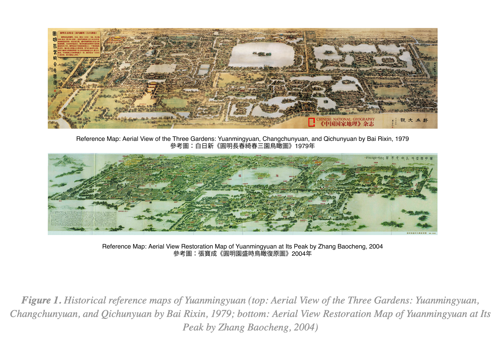
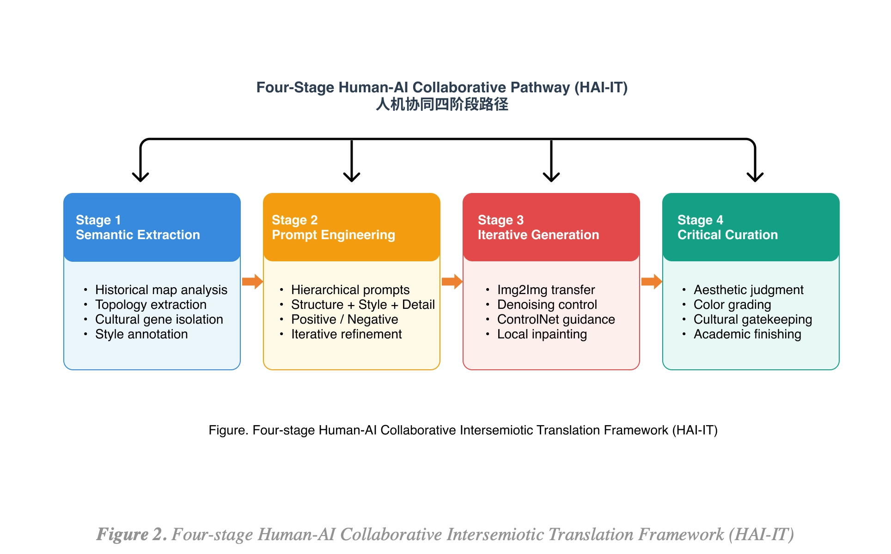
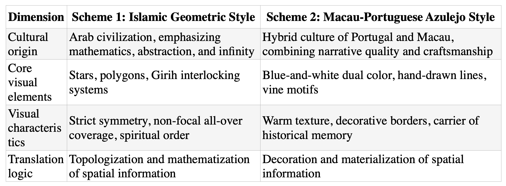
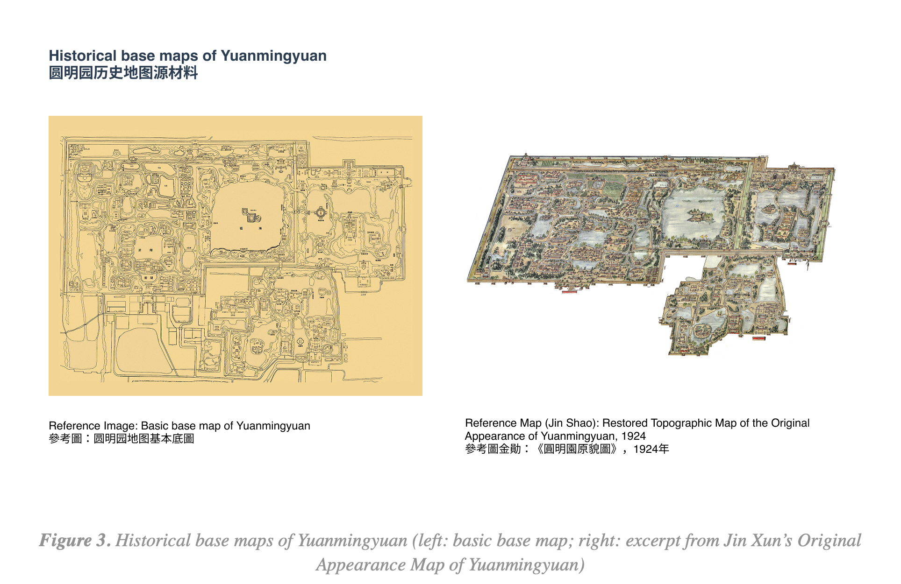
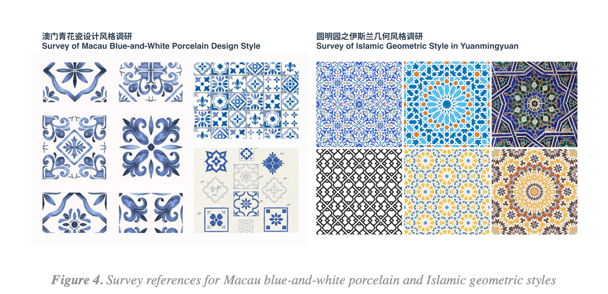
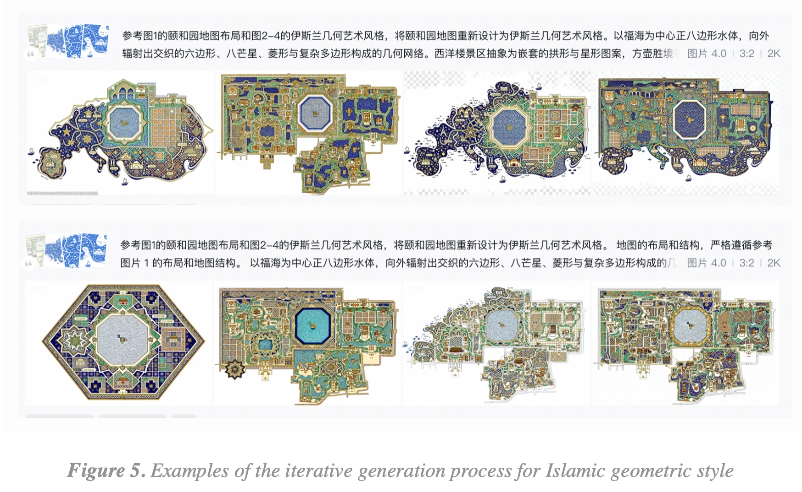
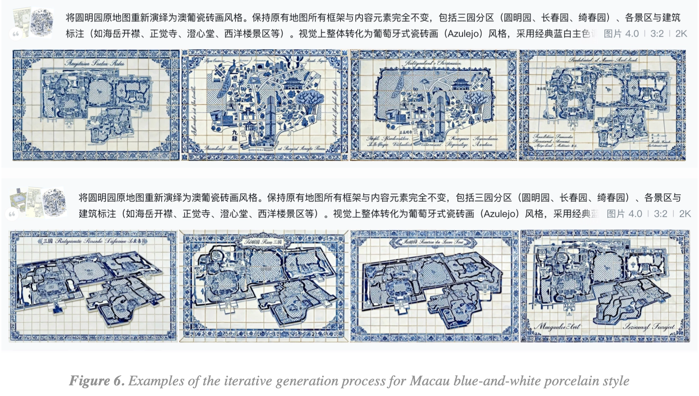
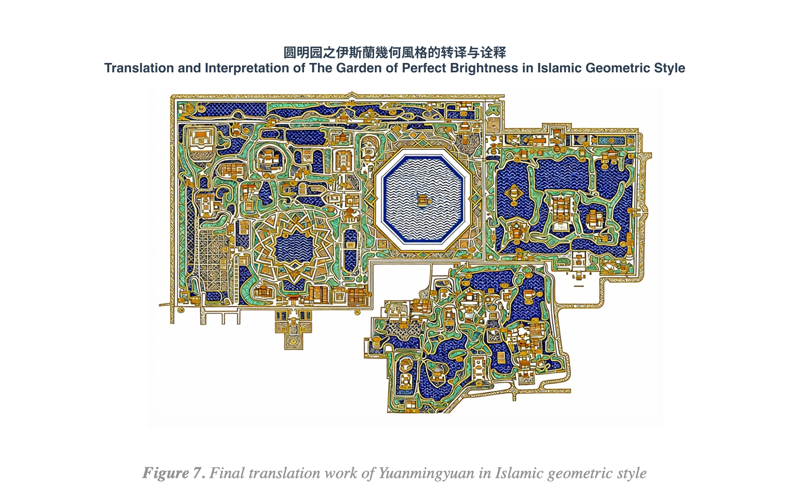
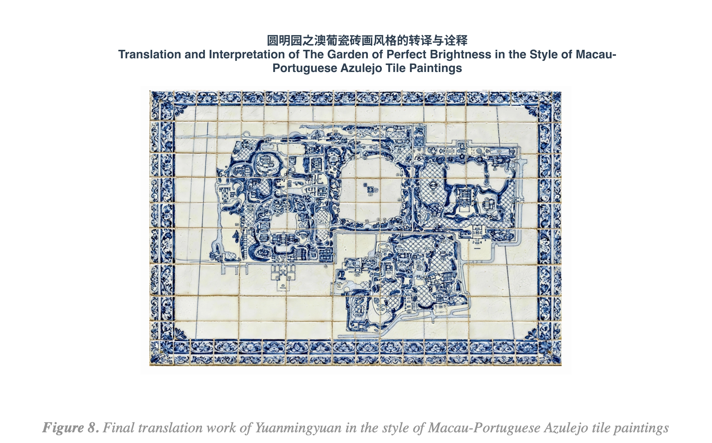

Translation of Visual Heritage in a Cross-Cultural Context: A Study on Visual Style Translation of Yuanmingyuan Maps Using AIGC Technologies
Author: Jiaqun Liu (Sole Author) · Affiliation: University of Macau (Graduate Course Project) · Status: Unpublished Manuscript
Abstract
Against the backdrop of global cultural heritage conservation and the digital humanities turn, Yuanmingyuan is not only the pinnacle of classical Chinese garden art but also a symbolic presence of cultural collision, trauma, and rebirth in modern history. With the rapid development of generative artificial intelligence (AIGC) technologies, the digital conservation of cultural heritage is shifting from static “precise restoration” toward dynamic “creative translation.” Taking historical maps of Yuanmingyuan as the core spatial information carrier, this study introduces two heterogeneous visual languages—Islamic geometric style and Macau-Portuguese Azulejo tile painting—and explores pathways and possibilities for cross-cultural visual style translation through human-AI collaborative design practice. The research positions this process as intersemiotic translation and constructs a “Four-Stage Human-AI Collaborative Pathway” (HAI-IT), documenting in detail the specific decisions involved in material deconstruction, prompt engineering, iterative generation, and critical curation.
The core contributions are threefold: first, the proposal and validation of a transferable human-AI collaborative intersemiotic translation framework (HAI-IT); second, the revelation, through a dual-style comparative experiment, of the tension between “structural fidelity” and “intensity of stylistic transformation” in AIGC-mediated translation; and third, the demonstration of the irreplaceable role of the designer as “cultural gatekeeper” in the generative process. The results indicate that AIGC is not merely a style-transfer tool but a generative intermediary that continuously compels designers to negotiate the preservation and reconfiguration of cultural genes. This study provides an operable case model for intelligent heritage visualization and opens new pathways for innovative practices of cultural heritage from a design studies perspective.
Keywords: cross-cultural translation; visual style translation; intersemiotic translation; AIGC; Yuanmingyuan; Islamic geometry; Azulejo; human-AI co-creation; design heritage
1. Introduction: The Contemporary Turn of Digital Humanities and Cultural Heritage
Yuanmingyuan (Garden of Perfect Brightness), known as the “Garden of Gardens,” embodies the Qing imperial court’s ultimate pursuit of cosmic order and earthly paradise through its spatial layout, architectural styles, and water systems.1 The catastrophe of 1860 reduced this magnificent garden to ruins, leaving only historical documents, Yangshi Lei drawings, and a limited number of images as the foundation for later cultural imagination and digital restoration.2 In the contemporary context of global cultural heritage conservation and transmission, the question is no longer limited to how to “restore” the garden with the highest fidelity, but rather how to effectively reactivate its visual heritage within different cultural and semiotic systems.
With the explosive development of AIGC technologies, the digital conservation of cultural heritage is shifting from static “precise restoration” to dynamic “creative translation.”3 Based on deep learning and generative adversarial networks, AIGC demonstrates significant potential for extracting, deconstructing, and recombining cultural genes, providing designers with new tools for cross-temporal and cross-regional cultural dialogue. This study aims to conduct cross-cultural visual style translation of Yuanmingyuan maps—the core spatial information carrier—through AIGC technologies, introducing the “Islamic geometric style” and the “Macau-Portuguese Azulejo style” as two heterogeneous cultural languages, thereby exploring new narrative pathways and aesthetic expressions for cultural heritage in the digital age.
2. Research Background and Related Literature
Yuanmingyuan comprises three gardens—Yuanmingyuan, Changchunyuan, and Qichunyuan—whose spatial layout follows the principle of “creating scenery with water,” with water systems occupying an extremely high proportion of the entire complex.4 From the perspective of the history of visual communication design, maps of Yuanmingyuan are not merely records of geographic information but condensations of imperial power and landscape aesthetics. Historical maps such as the Complete Map of the Three Gardens of Yuanming, Changchun, and Wanchun, Jin Xun’s Original Appearance Map of Yuanmingyuan (1924), and the 1933 measured survey maps employ unique scatter-point perspective and freehand techniques to transform complex spatial relationships into planar symbolic systems.5

Islamic geometric patterns constitute one of the three pillars of Islamic decorative art (the other two being calligraphy and vegetal motifs). Owing to religious prohibitions against figurative imagery, geometric art developed to an extremely high degree of complexity. Its core principle is based on the division of the circle, generating squares, triangles, and polygons that construct infinitely extensible tessellation systems through translation, rotation, and reflection.6 At the symbolic level, the circle signifies unity and diversity, while patterns such as the eight-pointed star symbolize the infinity of Allah. This highly rational, algorithmic visual system possesses an inherent compatibility with the underlying computational logic of AIGC.
The term Azulejo derives from the Arabic “al-zulayj,” meaning “polished little stone.” Originally introduced to the Iberian Peninsula by the Moors, it gradually evolved in Portugal from purely geometric decoration into a narrative art form and, under the influence of Chinese blue-and-white porcelain in the seventeenth century, established its classic blue-and-white palette.7 When this art form arrived in Macau with the Portuguese, it initiated a unique cross-cultural dialogue. Macau’s tile paintings retain European compositional logic while incorporating local landscapes, architecture, and scenes of daily life, becoming a visual representation of the harmonious coexistence of Chinese and Western cultures.
At the theoretical level, this study draws on Roman Jakobson’s concept of intersemiotic translation, understanding visual style translation as the transposition of meaning from one semiotic system to another.8 Salvatore Zingale regards design as a translational activity, emphasizing that design mediates the transformation of vague social needs or cultural imagery into concrete artifacts.9 These theories provide an analytical framework for understanding the preservation and reconfiguration of “cultural genes” in cross-cultural visual translation.
3. Theoretical Framework and Methodology: The Four-Stage Human-AI Collaborative Pathway
This study defines “style translation” as the process of re-encoding the semantic structure and spatial logic of the source object (Yuanmingyuan maps) through a specific artistic grammar (Islamic geometry or Azulejo). This translation is not a simple filter overlay but a deep reconstruction based on semiotic principles. With the intervention of AIGC, design behavior is transformed into prompt-driven heuristic exploration, in which AI models fuse feature vectors of different cultures in latent space, thereby producing visual outputs that are both novel and culturally logical.
The study constructs a “Four-Stage Human-AI Collaborative Pathway” (Human-AI Collaborative Intersemiotic Translation Framework, abbreviated as HAI-IT):

Stage 1: Material Deconstruction and Cultural Gene Extraction
A structured analysis was conducted on historical maps of Yuanmingyuan. Through scanning and digital processing of the Forty Views of the Qianlong Era and Yangshi Lei archives, the topological structure of the garden was extracted, including core water bodies (such as Fuhai), major architectural axes (such as from the Great Palace Gate to the Zhengda Guangming Hall), and the boundaries of various scenic areas. Concurrently, “visual annotation” was performed on the two target styles: for Islamic geometry, the identification of basic grids, symmetry groups, and color spectra; for Azulejo, the analysis of brushstroke edge diffusion effects, blue saturation hierarchies, and the complexity of border decorations.


Stage 2: Model Selection and Prompt Engineering
Diffusion models such as “Jimeng” were primarily employed. Prompt design followed a hierarchical structure of “structure + style + detail.” Positive prompts emphasized “abstract plan map of Yuanmingyuan, Islamic geometric style, complex and precise geometric patterns… water systems represented by blue geometric banded forms, buildings marked by small golden geometric units.” Negative prompts excluded realistic photography, three-dimensional perspective, messy lines, and similar elements. Designers iteratively refined prompts multiple times to address the AI model’s insufficient understanding of complex geographic coordinates.
① Positive Prompts: “Map of Yuanmingyuan, top-down view, central octagon water body as Fuhai, surrounding intricate Islamic geometric patterns, girih interlocking system, 8-pointed stars, vibrant cobalt blue and gold palette, high precision, architectural nodes represented as golden stars.”
② Negative Prompts: “Realistic photography, 3D perspective, messy lines, text, human figures, chaotic colors, blurred textures.”

Stage 3: Iterative Generation and Style Transfer
Image-to-image (Img2Img) functionality was utilized, taking the original Yuanmingyuan map as the base image and adjusting denoising strength to achieve visual translation. Initial generation employed low denoising strength to preserve base contours; the detail-enhancement stage increased denoising strength to inject stylistic features; local adjustments used Inpainting to correct erroneous nodes; style fusion injected edge constraints via ControlNet.


Stage 4: Expert Review and Post-Production
AI-generated outputs required human aesthetic intervention. Designers performed color correction and contrast enhancement based on color theory and historical accuracy, adding professional design metadata such as scale bars, decorative borders, and textual annotations, ultimately producing design works that meet academic standards.
4. Case Studies and Design Analysis
4.1 Islamic Geometric Style Translation: Order, Abstraction, and Infinity
In this scheme, the organic landscape morphology of Yuanmingyuan is thoroughly “mathematized.” The regular octagonal water body of Fuhai at the center becomes the visual anchor, radiating outward in a fractal geometric network. The originally natural and winding lake shores are transformed into precisely fitted geometric edges, embodying a cross-cultural drift from the natural philosophy of “unity of heaven and humanity” toward a cosmological view of “mathematical divinity.”10 The image exhibits non-focal, all-over characteristics, guiding viewers to experience immersion through a sense of overall order. The contrast between indigo and gold intensifies the imagery of “starry sky” and “flowing water,” elevating the imperial garden into a metaphysical spiritual realm.
The design breakthrough lies in deliberately abandoning the landscape freehand style and scatter-point perspective conventionally used in traditional Chinese garden maps, instead employing a highly abstract and rational geometric language to represent an Eastern imperial garden. This cross-cultural visual conversion, on the one hand, amplifies and emphasizes the spatial order of Yuanmingyuan at the geometric level; on the other hand, it places “cultural heritage” within a broader dialogue of civilizations.

4.2 Macau-Portuguese Azulejo Style Translation: Memory, Hybridity, and Warmth
This scheme presents a distinctly different “historical warmth.” The image retains the brushstroke texture of hand-painted blue-and-white porcelain; subtle glaze reflections at the edges make the paper map appear as if it were a ceramic mural embedded on a building façade. This treatment endows “geographic information” with “materiality,” implying the tactile quality of Yuanmingyuan as a World Cultural Heritage site. Decorative borders incorporate a combination of wave patterns and Chinese ruyi motifs, echoing Macau’s identity as a node on the Maritime Silk Road. Names of scenic areas appear in the form of antique tile plaques, serving not only navigational functions but also constructing an atmosphere of “historical presence.”
The blue-and-white palette resonates with Chinese porcelain, while the compositional logic exhibits clear European regularity, perfectly interpreting Yuanmingyuan’s original intention of “Sino-Western hybridity.” This translation draws upon Azulejo—an art form bearing traces of colonial and trade history—to metaphorize the complexity and integrative force of civilizational exchange. In sharp contrast to the “abstract order” of the Islamic geometric scheme, the Azulejo scheme adopts a translation logic of “decoration and materialization.” It does not pursue thorough geometric purification; instead, while retaining the original map framework and content elements (the three-garden divisions and architectural annotations), it injects the blue-and-white dual color, hand-drawn lines, and vine motifs, transforming the map itself into a craft object that can be “touched.” The blue-and-white palette echoes Chinese porcelain, while the compositional logic displays distinct European regularity, perfectly interpreting the original “Sino-Western hybrid” intent of Yuanmingyuan. This translation, by means of an art form marked by colonial and trade historical traces, metaphors the complexity and integrative power of civilizational exchange, and also provides another possible pathway for cross-cultural visual translation—not the elimination of difference, but the coexistence of difference at the levels of materiality and memory.

5. Discussion: Critical Human-AI Collaboration and Heritage Ethics
The greatest challenge in using AIGC for heritage translation lies in the “crisis of authenticity.” The stochastic generation of AI may lead to distortions of historical facts. It is recommended that future design practice establish specialized LoRA models based on the “Yangshi Lei” dataset to constrain AI training, ensuring that basic structural features of the garden are consistently respected during the stylization process.
The study further finds that AI tends to generate images conforming to mainstream and popular aesthetics while overlooking subtle yet culturally significant details. Designers should not become mere “prompt inputters” but should act as “cultural gatekeepers,” employing professional knowledge to filter and revise AI-generated content, thereby ensuring that the translation process possesses academic depth rather than mere visual consumption.11
Directions for further research include: translation from two-dimensional to three-dimensional forms, utilizing text-to-3D technologies to convert stylized maps into interactive three-dimensional scenes; cross-modal emotional generation, synchronously generating music or narrative texts that match the emotional tone of the style in conjunction with visual images; and global collaborative design, leveraging AIGC’s cross-lingual capabilities to invite users from different cultural backgrounds to participate jointly in the “stylistic re-imagination” of Yuanmingyuan.
6. Conclusion: Civilizational Dialogue under the Mirror of Technology
Through the AIGC visual translation of Yuanmingyuan maps, this study demonstrates the core value of artificial intelligence in the digital innovation of cultural heritage. From the rational abstraction of Islamic geometry to the warm narrative of Azulejo, technology functions not only as a transmitter of style but also as a producer of meaning, bridging the fissure between history and the future.
This practice reveals a new paradigm of cultural heritage conservation: it should not be regarded merely as a specimen requiring sealed protection, but as a continuously growing “cultural genome” that radiates new visual vitality through collisions with different technologies and civilizations. Although AIGC brings new challenges of control, ethics, and copyright, under the rational guidance of designers, this act of “translation” will greatly enrich humanity’s collective memory and aesthetic imagination of historical heritage. Rendered by digital computational power, the maps of Yuanmingyuan are transcending the glory of the Qing dynasty and the ruins of 1860, moving toward a more plural, open, and intelligent digital future.
References
- Bonner, J. (2017). Islamic Geometric Patterns: Their Historical Development and Traditional Methods of Construction. Springer. https://doi.org/10.1007/978-1-4419-0217-7
- Guo, D. (2010). The Memory of Yuanmingyuan: From the Garden of Gardens to Ruins. Beijing: Beijing Publishing House. Related Yangshi Lei research: https://book.douban.com/subject/6090955/
- Jakobson, R. (1959). On Linguistic Aspects of Translation. In R. A. Brower (Ed.), On Translation (pp. 232–239). Harvard University Press. https://web.stanford.edu/~eckert/PDF/jakobson.pdf
- Jin, X. (1924). Original Appearance Map of Yuanmingyuan.
- Li, C., Ye, Z., Wen, W., Li, L., & Shao, J. (2025). Beyond Photorealism: An AIGC-Powered Framework for Stylized and Gamified Cultural Heritage Revitalization. Buildings, 15(20), 3782. https://doi.org/10.3390/buildings15203782
- MIT Visualizing Cultures. (n.d.). The Garden of Perfect Brightness. Accessed July 2026. https://visualizingcultures.mit.edu
- Zhong, R. (2025). The Evolution of Portuguese Tile Art: Blending and Transformation from the Homeland to Macao, China. Chinese Studies, 14, Article ID 144024. https://doi.org/10.4236/chnstd.2025.144024
- Zingale, S. (2016). Design as translation activity: A semiotic overview. In Proceedings of DRS 2016: Future-Focused Thinking. Design Research Society. https://doi.org/10.21606/drs.2016.401